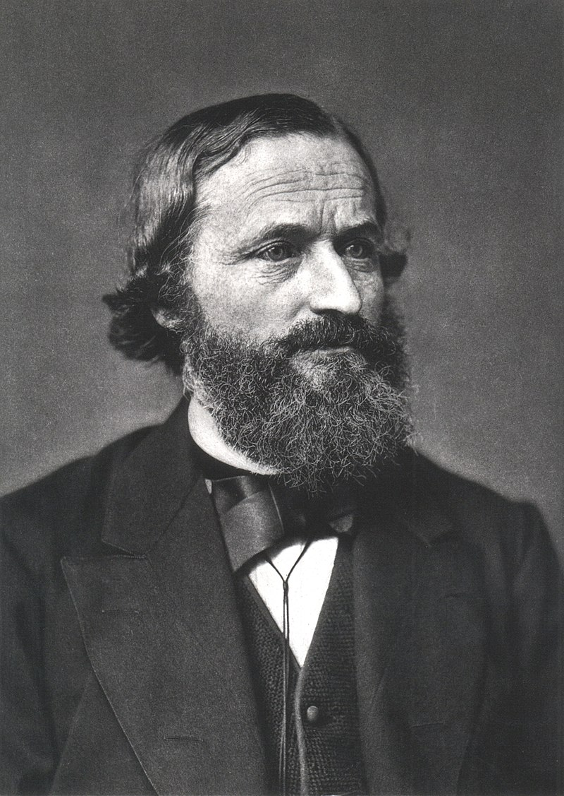
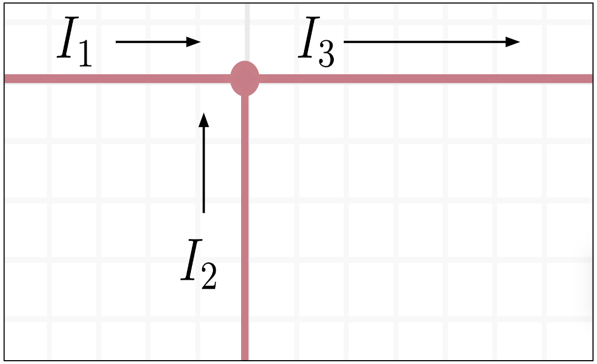
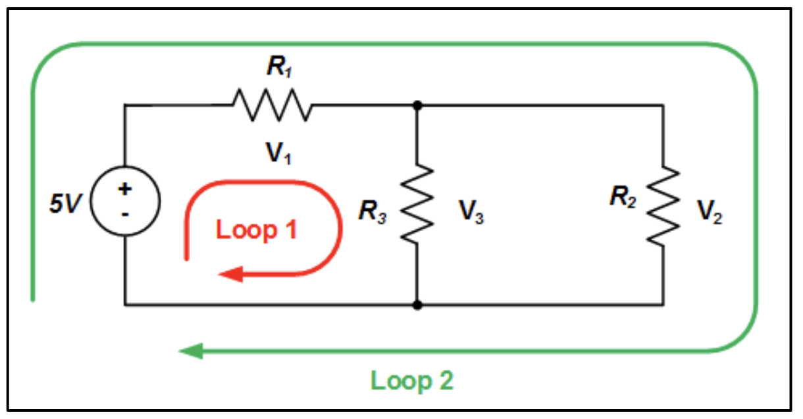
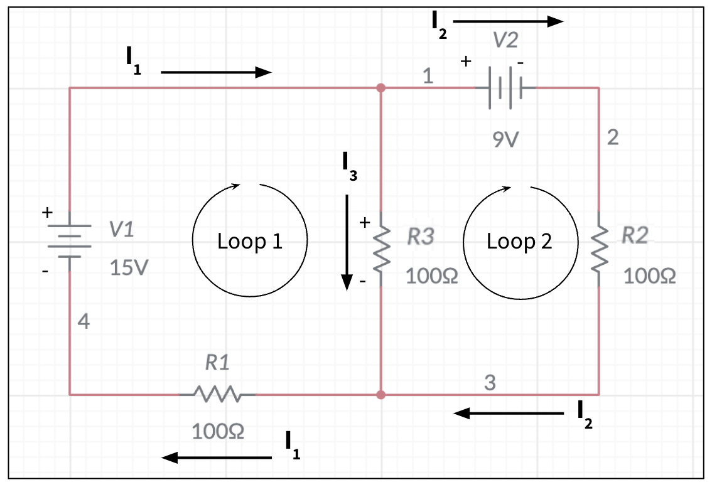
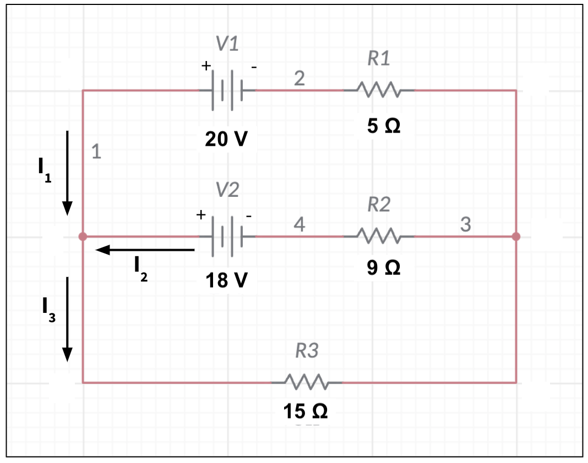
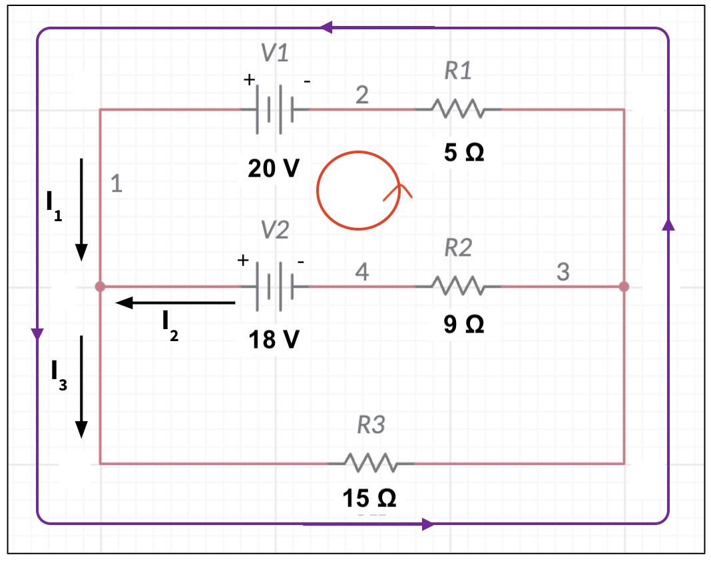

Lecture 6: Kirchhoff’s Laws#
Learning Objectives#
By the end of this lecture you should:
Be able to recall Kirchhoff’s Laws.
Be able to use Kirchhofs’s laws to solve circuit problems.
Kirchhoffs’s Laws#
This topic is the last of the circuits section of this unit. Kirchhoffs rules are remarkably simple, however they can often be rather fiddly and it is very easy to make mistakes when performing calculations using them. In order to be able to do questions using Kirchhoffs laws, ensure that your knowledge of how to solve simultaneous equations is up to scratch by reviewing any appropriate materials from your maths modules.
Kirchhoff’s Laws are named after Gustav Robert Kirchhoff (imaged), a 19th century physicist/mathematician who contributed to our understanding of electronic circuits as well as other fields such as optical spectroscopy and thermal physics.

The Junction Law#
A junction in a circuit is simply a point where three or more conductors meets. At a junction current can split or combine. This intuatively makes sense - if a we have a pipe with water flowing through it, we would expect the same behaviour at a junction where multiple pipes meet.
This leads us to the first of Kirchhoff’s laws, namely that “the total amount of charge leaving a junction is the same as the amount of current entering a junction” i.e. \(I_{in} = I_{out}\). Let’s take a look at an example:

In this example, applying the law we can derive an expression relating the three currents, \(I_1\), \(I_2\) and \(I_3\):
\(I_{in} = I_{out},\)
\( \therefore I_1 + I_2 = I_3. \)
That is all there is to the junction rule! This is simple, but becomes a very powerful law when combined with the next law, the loop law.
Important - The Junction Law
The junction law states that the total amount of charge leaving a junction is the same as the amount of current entering a junction” i.e. \(I_{in} = I_{out}\).
The Loop Law#
The loop law is again quite a simple law to learn, but does have a few associated rules that you must be familiar with. Formally the loop law states that “the algebraic sum of the potential differences, including voltage supploed by the voltage sources and voltagr drop across resistive elements, in any loop must be equal to zero”, but what does this actually mean?
The first question here is “what is a loop?”. A loop is simply a chosen pathway that we draw onto our circuit diagram. Take a look at the the example of the loops added to the circuit below:

Here we have two loops, the green loop and the red loop. There are not the only loops that could have been drawn onto this circuit, but these ones do encompass all of the circuit components. For example, the green loop could also have simply been the same as the red loop, but on the right hand side of the circuit. It does not really matter, the choice of how a loop looks is rather arbitrary.
Now we know what a loop is, let us employ our loop law. For the red loop, the loop passes over the source of EMF, then to the resistor \(R_1\) and then to \(R_2\), before returning back to the source of EMF. The loop law says that the sum of voltages must equal zero, therefore:
\( \epsilon - V_1 - V_3 = 0,\)
\( \epsilon = V_1 + V_3, \)
and similarly for the green loop:
\( \epsilon - V_1 - V_2 = 0,\)
\( \epsilon = V_1 + V_2. \)
You may now be wondering why the EMF in the equations above is positive, but the voltage drops across the resistors was negative. Essentially, to decide if we add or subtract an EMF or voltage drop we need to consider the direction of the loop and the direction in which the current is flowing. These key rules are given in the highlighted summary box below - ensure you understand them!
Important - The Loop Law
The loop law states that “the algebraic sum of the potential differences, including voltage supploed by the voltage sources and voltage drop across resistive elements, in any loop must be equal to zero”. The rules for summing EMFs and voltage drops together are as follows:
When the loop is moving in the same direction as the current in a resistor, the voltage drop is subtracted.
When the loop is moving in the opposite direction to the current flow in a resistor, the voltage drop is added.
When the loop across a voltage source is going from the negative terminal to the positive terminal, the EMF is added.
When the loop across a voltage source is going from the posirve terminal to the negative terminal, the EMF is subtracted.
Note: in the circuit symbol for an EMF source (voltage supply), the longer line represents the positve terminal.
Setting Up Kirchhoff’s Law Problems#
Let us now use this knowledge to try and solve a circuit problem. From the circuit diagram below, we are going to determine the current flowing through each of the resistors \(R_1\), \(R_2\) and \(R_3\). The currents \(I_1\), \(I_2\) and \(I_3\) have been added onto the circuit manually and their directions are assumed.

The first thing we need to do is establish the equations for our system. Using the junction rule we can say that:
\( I_1 = I_2 + I_3, \)
as we can see at the two junctions that the current \(I_1\) splits into the two smaller currents at the junction at the top of the circuit. If we then look at loop 1 we can see the following features:
The loop is clockwise.
The loop passes from the negative terminal to the positive terminal.
The loop is in the same direction as the currents \(I_3\) and \(I_1\).
Therefore, we can write the following expression for loop 1 using the loop law:
\( \epsilon - V_1 - V_3 = 0, \)
which, using Ohm’s law, can be expressed as:
\( \epsilon - I_1 R_1 - I_3 R_3 = 0. \)
Loop 2 has the following features:
The loop is clockwise.
The loop passes from the positive terminal to the negative terminal
The loop is in the same direction as current \(I_2\).
The loop is in the opposite direction to the current \(I_3\).
Therefore we can write the following expression for loop 2 using the loop law:
\( -\epsilon - V_2 + V_3 = 0, \)
which can be written as
\( -\epsilon - I_2 R_2 + I_3 R_3 = 0. \)
We now have the three equations that describe the circuit. We can solve these simulataneous equations to determine the values of \(I_1\), \(I_2\) and \(I_3\).
Equations of System
The system of simulatanous equations we must solve to determine the currents in each section of the circuit above are:
\( I_1 = I_2 + I_3, \)
\( \epsilon - I_1 R_1 - I_3 R_3 = 0, \)
and
\( -\epsilon - I_2 R_2 + I_3 R_3 = 0. \)
Questions#
Warning
Atempt the questions before looking at the solutions otherwise you will not learn!
Students who look at mark schemes without going through the motions of a question often think “yes, that’s what I would have done”, but are then unable to perfom on exams as the knowledge was never consolidated through practise.
Question 1#
From the example in the notes above, determine the magnitudes of currents \(I_1\), \(I_2\) and \(I_3\) by solving the system of simultaneous equations.
Hint
You will need to use substitution and elimination to solve these simultaneous equations.
Q1 Solution
We begin with the three equations that describe the system.
\( I_1 = I_2 + I_3, \,\,\,\,\,\,\,\,\,\,(1) \)
\( \epsilon - I_1 R_1 - I_3 R_3 = 0, \,\,\,\,\,\,\,\,\,\,(2) \)
and
\( -\epsilon - I_2 R_2 + I_3 R_3 = 0. \,\,\,\,\,\,\,\,\,\,(3) \)
Let us substitute equation (1) into equation (2):
\( \epsilon - (I_2 + I_3) R_1 - I_3 R_3 = 0, \)
which if we expand the brackets and rearrange becomes:
\( \therefore \epsilon - I_2R_1 - I_3R_1 - I_3 R_3 = 0, \)
\( \therefore \epsilon - I_2R_1 - I_3(R_1 + R_3) = 0. \,\,\,\,\,\,\,\,\,\,(4) \)
We can now substitute the known values of EMF and resistance into equations (3) and (4):
\( 15 - 100I_2 - (100+100)I_3 = 0, \)
\( 15 - 100I_2 - (200)I_3 = 0, \,\,\,\,\,\,\,\,\,\,(4),\)
and
\( -9 - 100I_2 + 100I_3 = 0 \,\,\,\,\,\,\,\,\,\,(3).\)
We can now solve these equations by elimination. If we subtract equation (2) from equation (4), we will eliminate the \(I_2\) term:
\( 24 + 0I_2 - 300I_3 = 0, \)
\( \therefore 24 = 300 I_3, \)
\( I_3 = \frac{24}{300}, \)
\( I_3 = 0.08 \, A.\)
That is the first current determined. Now we can subsititute the value of \(I_3\) into either equation (2) or (4) to determine the value of \(I_2\):
\( 15 - 100I_2 - 200I_3 = 0, \)
\( 15 - 100I_2 - 200(0.08) = 0, \)
\( 15 - 200(0.08) = 100 I_2, \)
\( I_2 = \frac{15 - 200(0.08)}{100}, \)
\( I_2 = -0.07\, A. \)
The value of \(I_2\) here is negative - this simply means that the direction of the current is the opposite to that defined when setting up the question (i.e. in reality the current flows in the opposite direction to the arrow in the diagram).
Now the values of \(I_2\) and \(I_3\) are known, these values can be substituted into equation (1) to determine the value of \(I_1\):
\( I_1 = I_2 + I_3 \)
\( I_1 = -0.07\, A + 0.08\, A \)
\( I_1 = 0.01\, A.\)
Therefore the magnitudes of the currents are \(I_1 = 0.01\, A\), \(I_2 = 0.07\, A\) and \(I_3 = 0.08\, A\).
Question 2#
Using the circuit diagram below, determine the magnitudes of the currents flowing through each section of the circuit.

Q2 Solution
This is just one example of how this problem could be solved. You may have used different loops which are also valid. You can check your final values to confirm that you have solved the problem correctly. The loops defined in this solution are the clockwise red and purple loops shown on the figure below.

First let us use the junction rule to write an equation relating the three currents. We can see from the figure that currents \(I_1\) and \(I_2\) combine to become \(I_3\), therefore:
\(I_3 = I_1 + I_2. \,\,\,\,\,\,\,\,\,\, (1) \)
Now we can write the loop equations. You will note that in this example there are two EMF sources, but the equation will be setup using the same rules as above.
The red loop has the following features
The loop is clockwise.
The loop passes from the negative terminal to the positive terminal of \(V_1\).
The loop passes from the positive terminal to the negative terminal of \(V_2\).
The loop is in the opposite direction to the current \(I_2\).
The loop is in the same direction as current \(I_1\).
Therefore we can write the following equation for the red loop:
\( V_1 - V_2 + I_2R_2 - I_1R_1 = 0, \)
\( 20 - 18 + 9I_2 - 5I_1 = 0, \)
\( 2 + 9I_2 - 5I_1 = 0. \,\,\,\,\,\,\,\,\,\, (2) \)
The purple loop has the following features
The loop is clockwise.
The loop passes from the negative terminal to the positive terminal of \(V_1\).
The loop is in the same direction as current \(I_1\).
The loop is in the same direction as current \(I_3\).
Therefore we can write the following equation for the loop:
\( V_1 - I_1R_1 - I_3R_3 = 0, \)
\( 20 - 5I_1 - 15 I_3 = 0, \,\,\,\,\,\,\,\,\,\, (3) \)
Now we can solve this system of equations. Let us start by substituting equation (1) into equation (3):
\( 20 - 5I_1 - 15(I_1 + I_2) = 0, \)
\( 20 - 5I_1 - 15I_1 - 15I_2 = 0, \)
\( 20 - 20I_1 -15I_2 = 0. \,\,\,\,\,\,\,\,\,\, (4) \)
Now we can’t directly eliminate any of the terms by subtraction this time, but if we multiply both sides of one equation by the same number, we can express it in a way where we can. For example, let’s multiply both sides of equation (2) by 4:
\( 4(2 + 9I_2 - 5I_1) = 4(0), \)
\( 8 + 36 I_2 - 20I_1 = 0. \,\,\,\,\,\,\,\,\,\, (5) \)
Now we can subtract equation (5) from equation (4) to eliminate the \(I_1\) term and solve for \(I_2\):
\(12 - 0I_1 - 51I_2 = 0, \)
\(12 - 51I_2 = 0, \)
\(12 = -51I_2, \)
\(I_2 = \frac{12}{51}, \)
\(I_2 = \frac{4}{17} \, A \approx 0.24\, A. \)
The value of \(I_2\) can now be substituted into one of our original equations, say equation (2):
\( 2 + 9I_2 - 5I_1 = 0, \)
\( 2 + 9\left(\frac{4}{17}\right) - 5I_1 = 0, \)
\( 2 + \frac{36}{17} - 5I_1 = 0, \)
\( 2 + \frac{36}{17} = 5I_1, \)
\( \frac{\left(2 + \frac{36}{17}\right)}{5} = I_1, \)
\( I_1 = \frac{14}{17}\, A \approx 0.82\, A.\)
Finally, we can use the values of \(I_2\) and \(I_1\) to determine the value of \(I_3\) using equation (1):
\( I_3 = I_1 + I_2, \)
\( I_3 = \frac{4}{17} + \frac{14}{17}, \)
\( I_3 = \frac{18}{17} \, A \approx 1.1 \, A. \)
Therefore the magnitude of each of the currents are \(I_1 = 0.82\, A\), \(I_2 = 0.24\, A\), and \(I_3 = 1.1\, A\).